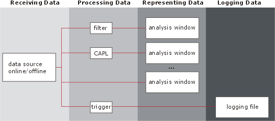
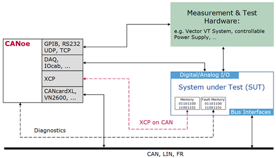
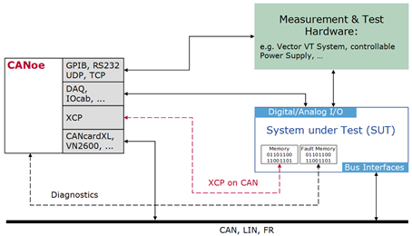
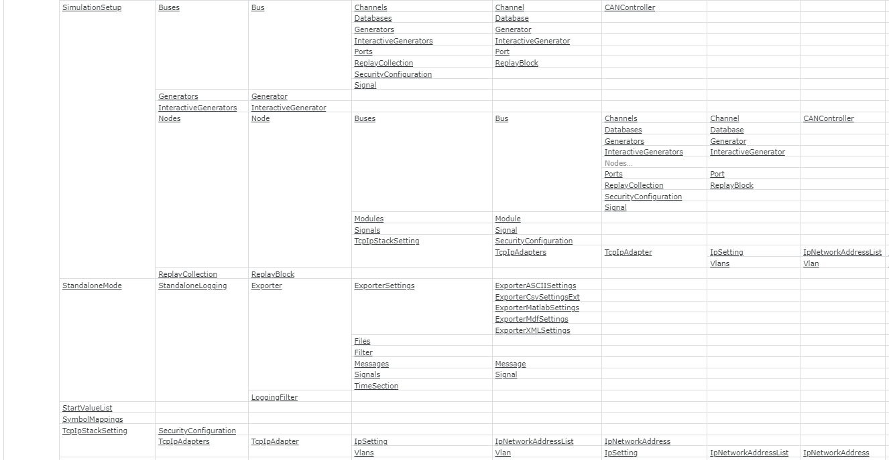
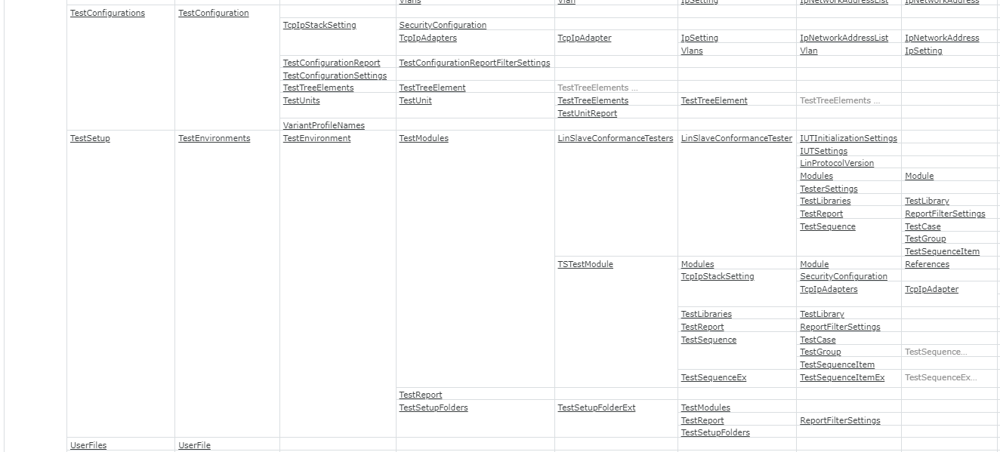
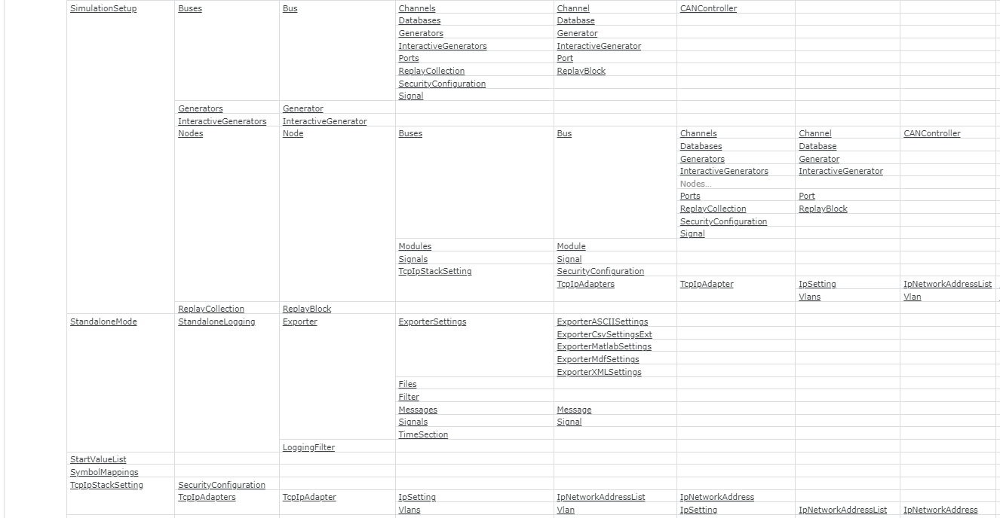
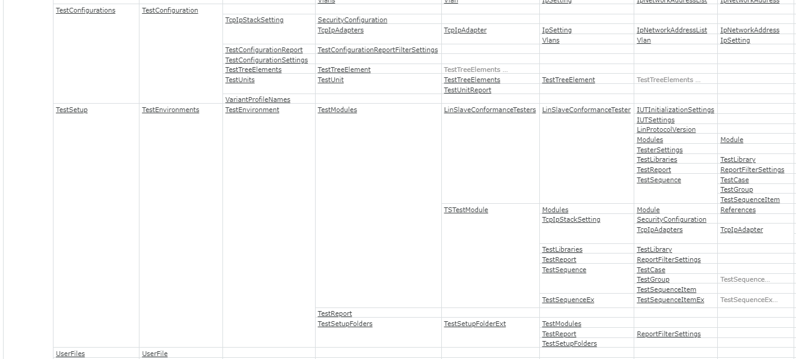

Vector CANoe Highlevel Understanding
CANoe Concept

Simulation Concept
Analysis Concept

Trace Window

Graphic Window
Bus Statistics Window
State Tracker Window

Data Window

Test Concept
 

Diagnostics Concept

COM Object Hierarchy
 




Examples
create new CANoe configuration